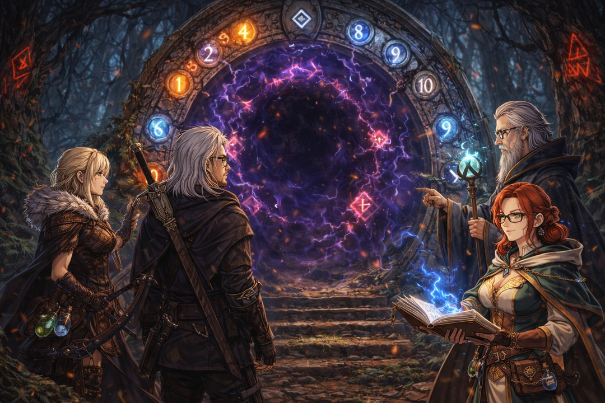
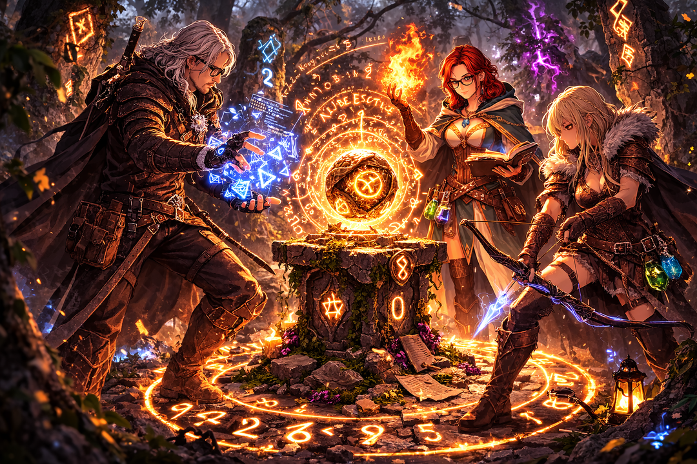

Após a descoberta do fragmento rúnico negro, Mestre Ardan ficou profundamente preocupado.
Segundo os registros antigos da Ordem de Oxenhall, esses fragmentos pertencem a uma magia proibida chamada:
Corrupção Lógica.
Quando essa energia se espalha, as runas começam a se comportar de forma errada.
Isso pode causar:
portais instáveis
artefatos fora de controle
criaturas surgindo onde não deveriam
Ardan acredita que a origem do problema está na antiga Floresta de Varnwood.
Uma floresta tão antiga que muitos dizem que as próprias árvores se lembram da magia antiga.
Você parte para lá acompanhado por:
Mestre Ardan
Selene, uma caçadora de monstros que conhece a floresta
Logo na entrada da floresta, o ar fica frio e pesado.
Runas antigas brilham nas pedras.
Mas algo está errado.
⚔️ MISSÃO 1 ⚔️
O Portal das Dez Runas
📜 História
Após caminhar algumas horas pela floresta, vocês encontram um portal rúnico antigo bloqueando o caminho.
Selene examina o portal e diz:
“Esses portais eram usados pelos magos para atravessar a floresta rapidamente.”
Mas agora ele está parcialmente corrompido.
Ardan observa as inscrições e explica:
“O portal só abre quando as runas são ativadas em sequência correta.”
As runas estão numeradas de 1 até 10.
Se forem ativadas fora da ordem, o portal pode liberar energia instável.
🎯 Objetivo da missão
Criar um sistema que mostre os números de 1 até 10 em ordem.

Use um sinal para organizar os números
&
⚔️ MISSÃO 2⚔️
O Eco da Runa Zero
📜 História
Mais adiante na floresta, vocês encontram um círculo de pedras rúnicas.
No centro há um artefato antigo chamado Orbe de Escuta.
Ele repete qualquer número que ouvir… indefinidamente.
Ardan explica:
“Este artefato só para quando ouvir a Runa Zero.”
Mas a corrupção parece ter deixado o orbe instável.
Ele continua ecoando números pela floresta.
Selene tapa os ouvidos.
“Se isso continuar, pode atrair monstros.”
Você precisa encontrar uma forma de controlar o artefato.
🎯 Objetivo da missão
Criar um sistema que:
continue recebendo números
só pare quando o número 0 for digitado

Digite um número
&
⚔️ MISSÃO 3 ⚔️
A Chuva de Runas
📜 História
Ao anoitecer, algo extraordinário acontece.
Pequenos símbolos luminosos começam a aparecer no céu da floresta.
Selene observa atentamente.
“Runas celestiais… não via isso desde criança.”
Mas há algo estranho.
A corrupção parece estar afetando os padrões.
Apenas algumas runas aparecem corretamente.
Ardan percebe um padrão:
“Somente as runas da Ordem dos Pares estão se manifestando.”
Se vocês conseguirem identificar todas as runas pares entre 1 e 20, talvez consigam entender como a corrupção está alterando a magia.
🎯 Objetivo da missão
Mostrar apenas os números pares de 1 até 20.